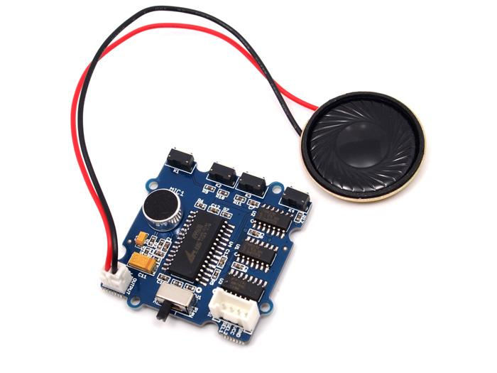
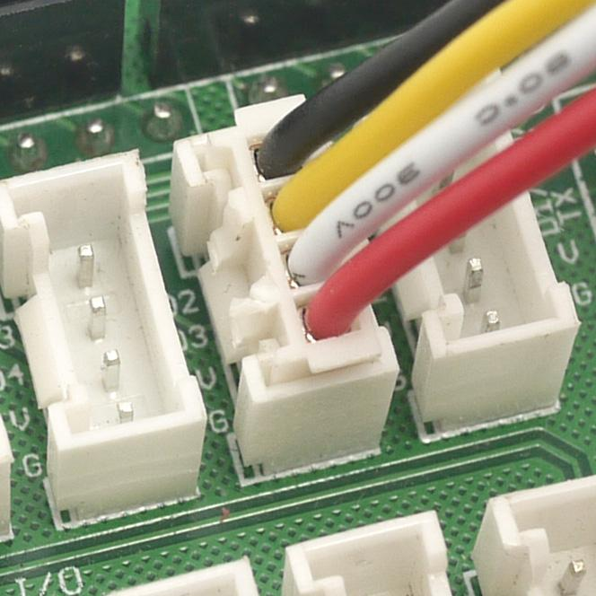
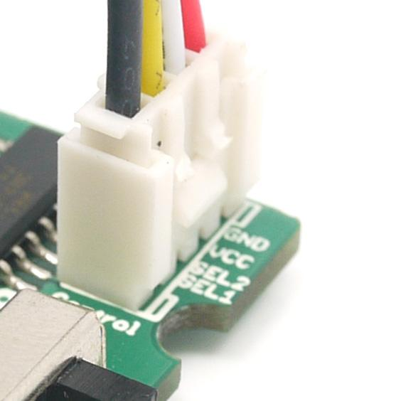
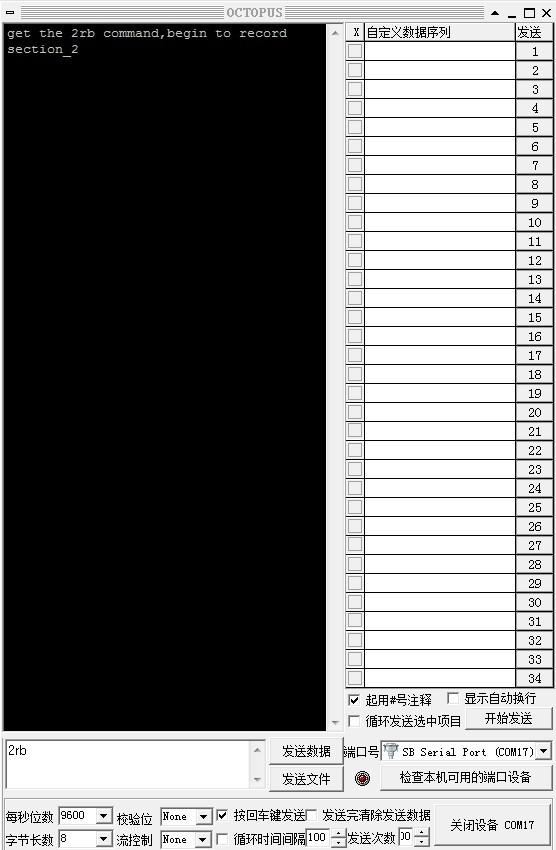
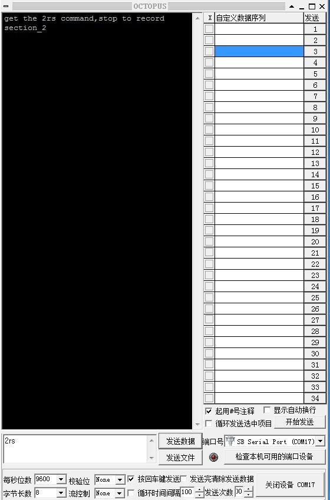
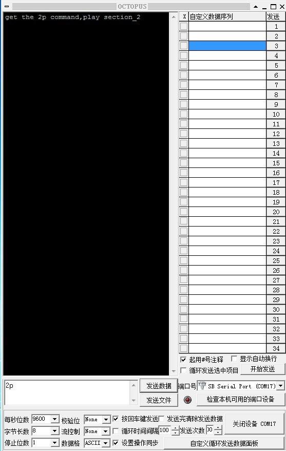

The Grove-Sound Recorder is based on APR9600, which offers true single-chip voice recording, no-volatile storage, and playback capability for 32 to 60 seconds. The sample is 8k and the total 32s for the Seeed Twig-Sound Recorder, divided into 4 sections, each section can be controlled separately. Besides, this Sound Recorder is also Grove compatible interface and can be controlled manually or Arduino/Seeeduino.
Model:SEN71254P

| Item | Min | Typical | Max | Unit |
|---|---|---|---|---|
| Voltage | 3.0 | 5.0 | 5.25 | V |
| Operating current | 25 | mA | ||
| standby current | 1 | uA | ||
| Range | ±1.5 | g | ||
This Grove-Sound Recorder supports 4 Message segments of fixed duration. Each segments can be controlled manually or by the MCU(Arduino/Seeeduino). And the duration of every segment can be changed by the customer. Recorder Method
Control the recorder manually is so easy. OK, let's have a look at it: The switch(SW1) is for recording/playing selecting, push it to "Rec" when you want to record voice, and push it to "Play" when you want to replay the voice in the recorder. The 4 buttons(K1~K4) are the control button, you can control with segment to record/replay by pressing the related button. The output connector is for connecting a 8 0.5w speaker, and the Grove connector is for powering and MCU controlling.
Step 1: Power the recorder. You could connect the "control" to the Base Shield via the grove 4 pin wire or any 5V voltage source.
Note : if you connect it to the Base Shield via 4 pin wire, you should make sure the SEL1 and SEL2 low by programming the connected pins.
I connected the "Control" connector to Digital port D1. And set the D1 and D2 to low by:
const int D1 = 1;
const int D2 = 2;
int State = LOW;
void setup() {
pinMode(D1, OUTPUT);
pinMode(D2, OUTPUT);
digitalWrite(D1, State );
digitalWrite(D2, State );
}
void loop()
{
}
Step 2: Push the SW1 to "rec".
Step 3: Push and hold the segment related button, K1 for example, to begin the recording, and release the button to stop recording, and you will hear "DI" both the beginning and stopping of recording.
Note: The recording time for each segment is no more than 15s, or it will be stop automatically even you still hold on the button, please reference:How to change the record time.
Step 4: When you want to replay the sound you recorded, just push the SW1 to "Play", and push the related button(Do not need to hold on), then you will hear the sound what you have recorded in this segment.
The Recorder can also controlled by the MCU(Arduino or Seeeduino), this feature makes this recorder module suitable for much more applications and gives the user fantastic feeling.
Ok, let's begin the MCU controlling for this recorder. Note that we define the 4 segments that controlled by K1/K2/K3/K4 as Section_1/Section_2/Section_3/Section_4.
Step 1: Prepare the hardware:wire the connector "Control" to the digital port D2 of the Base Shield. And push the SW1 to "Rec".


Step 2: Prepare the software. In order to control select the section to Record/Play, each decode of Sel_1 and Sel_2 point to different section.
| Sel_1(D2)/Sel_2(D1) | Segment selected |
| 0 0 | None(it means when 00,none of segment is selected) |
| 0 1 | Section_2 |
| 1 0 | Section_3 |
| 1 1 | Section_4 |
Note: when controlled by MCU, the Section_1can not be selected.
I am not interested in such a table, it is confusing! I just want the code!
Download the following code to your Arduino/Seeeduino,please click here if you do not know how to upload.
/****************************************************************************/
#include "APR9600.h"
/*macro definition of the Grove interface on the Sounder Recorder*/
#define SEL1 2
#define SEL2 3
ARP9600 recorder(SEL1,SEL2);
/*Store the command from the serial monitor you type.*/
char index;//can be '2','3','4',that is the index of section 2,section 3,section 4
char control;//control byte, can be 'r' for record, 's' for stop recording,
//'p' for play
void setup()
{
Serial.begin(9600);
recorder.begin();
}
void loop()
{
getCommand();
delay(50);
}
void getCommand()
{
if (Serial.available()>0)
{
/*Get the command from the serial monitor*/
index = Serial.read();
control = Serial.read();
}
while(Serial.available()>0)Serial.read();//clear the receive buffer
if((index > '1')&&(index < '5'))// index should be 2~4
{
if(control == 'r')//if it is record command?
{
recorder.record(index - 0x30);
Serial.print("get the ");
Serial.write(index);
Serial.write(control);
Serial.print(" command, ");
Serial.print("begin to record section_");
Serial.println(index - 0x30);
}
else if(control == 'p')//if it is play command
{
recorder.play(index - 0x30);
Serial.print("get the ");
Serial.write(index);
Serial.write(control);
Serial.print(" command, ");
Serial.print("begin to play section_");
Serial.println(index - 0x30);
}
else if(control == 's')//if it is stop command
{
recorder.stop();//stop recording
Serial.print("get the ");
Serial.write(index);
Serial.write(control);
Serial.print(" command, ");
Serial.print("stop recording");
}
/*Clear the command*/
index = 0;
control = 0;
}
}
Now, you can begin to control the recorder, with the following command (Baud Rate:9600):
| Command | Description | State of SW1 |
| 2rb | Begin to record Section_2 | REC |
| 2rs | Stop to record Section_2 | REC |
| 2p | Play Section_2 | Play |
| 3rb | Begin to record Section_3 | REC |
| 3rs | Stop to record Section_3 | REC |
| 3p | Play Section_3 | Play |
| 4rb | Begin to record Section_4 | REC |
| 4rs | Stop to record Section_4 | REC |
| 4p | Play Section_4 | Play |
Note: the section_1 can not be controlled by MCU.
After download the firmware to your Arduino/Seeeduino, make sure the connector "Control" is connected to the D2&D3&V&G.
Switch the SW1 to Rec, and type in the command with any serial port transceiver. OCTOPUS for example. Type in the command "2rb" first to begin to record the section_2, type in "2rs" to stop the recording. Note that the recording will automatic terminate after about about 15s if no "2rs" was typed in.
 
And now, you can type in the "2p" to play the Section_2, note that you should make sure the SW1 is pushed to "Play".

You can record the 3 Sections (Section_2, Section_3, Section_4) first, and then, with the serial port, to control which section you want to replay.
You can control the quality/duration trade off by controlling the sampling frequency. Oscillator frequency can be changed by changing the resistance(R7 in the PCB) from the OscR pin to GND. Table summarizes resistance values and the corresponding sampling frequencies, as well as the resulting input bandwidth and duration.
| Resistance | Sampling Frequency | Input Bandwidth | Duration |
|---|---|---|---|
| 44 K | 4.2 KHZ | 2.1 KHZ | 60 S |
| 38 K | 6.4 KHZ | 3.2 KHZ | 40 S |
| 24 K | 8.0 KHZ | 4.0 KHZ | 32 S |
The R7 is 24K when it is shipped to your hand, you can change it to 38K/44K to get a longer duration of recording, with the tradeoff of lower sample rate.
| Revision | Descriptions | Release Date |
| Grove-Sound Recorder V0.92b | Initial public release | Jun 10 2011 |
If you have questions or other better design ideas, you can go to our forum or wish to discuss.
Copyright (c) 2008-2016 Seeed Development Limited (www.seeedstudio.com / www.seeed.cc)